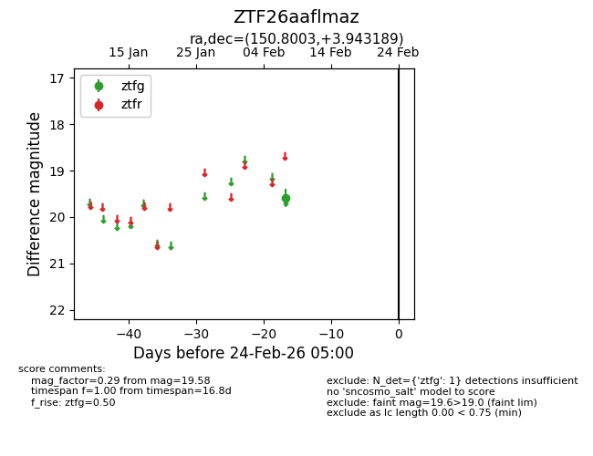
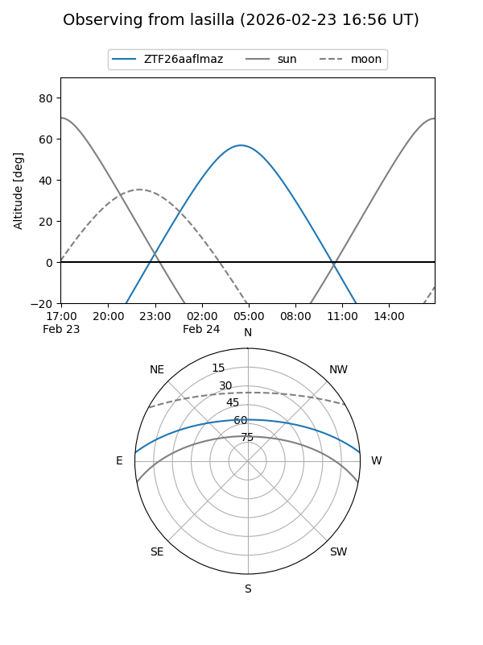
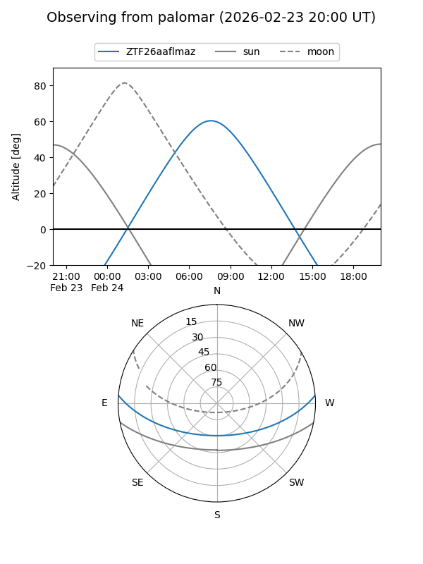

ZTF26aaflmaz
Target ZTF26aaflmaz at 2026-02-24 09:08
Aliases and brokers:
FINK: link
Lasair: link
ALeRCE: link
alt names
ZTF26aaflmaz (ztf,fink_ztf)
Coordinates:
equatorial (ra, dec) = 150.8003,+3.94319
equatorial (HMS+DMS) = 10:03:12.07,+03:56:35.48
galactic (l, b) = (235.4114,+43.67502)
Flags:
Photometry:
last ztfg=19.58
1 ztfg detections
Lightcurve

Visibility


Additional plots